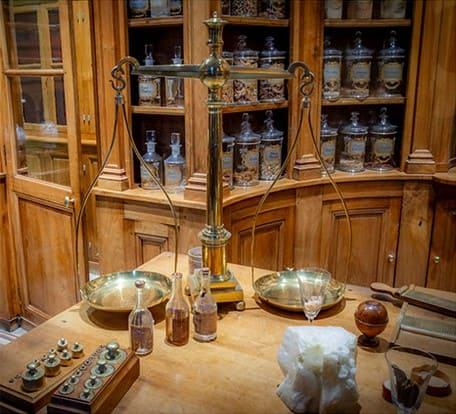
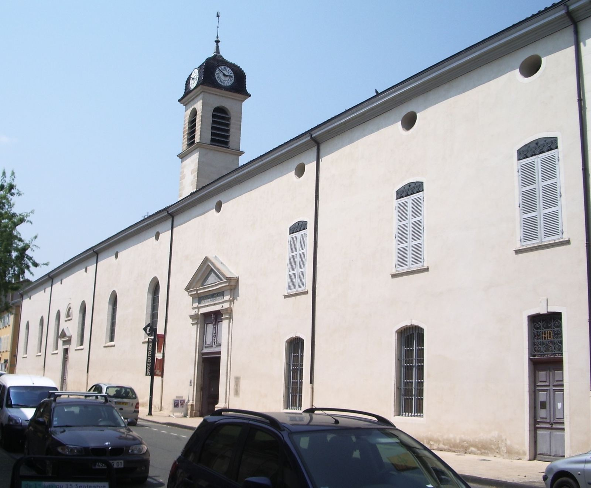
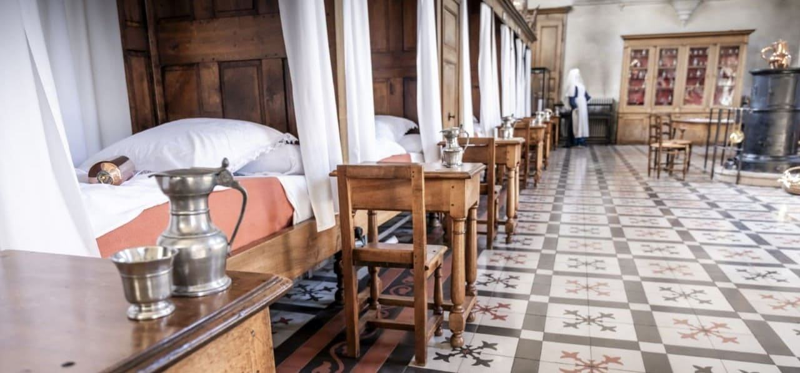

Le bloc opératoire
Un bloc chirurgical du début du XXe siècle, visible en visite guidée.
À développer : histoire de sa reconstitution, photo du bloc.

Trois siècles de vie hospitalière, de 1733 à nos jours.
Construit au début du XVIIIe siècle pour accueillir les pauvres de Belleville et des paroisses environnantes, l’Hôtel-Dieu a fermé en 1991. Successivement lieu d’accueil, centre de soins puis hospice, il témoigne de la vie hospitalière du XVIIIe siècle à nos jours.
Les premiers locaux sont inaugurés en 1733. L’établissement s’agrandit au XIXe siècle : seconde salle de malades et chapelle des malades en 1826, troisième salle en 1850, chapelle des Sœurs en 1851. Il est classé Monument historique.

Sources : site du musée de l’Hôtel-Dieu, Journées européennes du patrimoine, presse locale.
Trois salles de malades garnies de leurs lits à ruelle, avec poêles, armoires à linge et objets du quotidien et de soin, racontent la vie hospitalière jusqu’en 1991.
Deux chapelles les accompagnent : celle des malades (1826) et celle des Sœurs (1851).
Ancienne pharmacie de l’hôpital, datée de 1754 par le musée (une pharmacie est mentionnée dès 1749). Elle conserve une riche collection de pots en faïence, en verre et en porcelaine, et les instruments pour fabriquer les remèdes : appareil à cachets, pilulier, balances…
C’est à ces pots, les albarelles, que l’association doit son nom. L’apothicairerie se visite uniquement en visite guidée.

Un bloc chirurgical du début du XXe siècle, visible en visite guidée.
À développer : histoire de sa reconstitution, photo du bloc.

À développer : présentation de la maternité, dates, photos.

Dans la cour Saint-Antoine, dix massifs présentent les plantes autrefois cultivées par les Sœurs de Sainte-Marthe, regroupées par vertus : fébrifuges, toniques, dépuratives, anti-douleurs… Le sureau voisin est labellisé « Arbre remarquable » depuis 2023.